管理儀表板、獎勵制度與對外揭露的更新與修正¶
版本：v0.2 文件狀態：已決定（2026-10-17 開立，同日使用者答覆第 10 節七題） 適用讀者：護理部、醫院管理層、FDE 工程團隊
0. 本文件的定位¶
1017 使用者要求對迭代 19（管理儀表板、獎勵制度與對外揭露，1010 完成）做一次更新與修正，提了三件事：
- 對照系統最新的狀況，補齊漏掉的資料：迭代 19 之後又做了迭代 20～23（遊戲化），也排了迭代 24、25（花園與相簿的擴充、緊急通報重新設計），三者該蒐集或展示卻沒有的，全部補上；三者分別蒐集與展示了哪些資料，另寫一份子文件《之一：三者蒐集與展示的資料》
- 管理儀表板與對外揭露要有圖：現在全是數字與表格，很不友善。先逐一分析每一個資料的意義，再從「看的人要回答什麼問題」選圖表類型並畫出來
- 獎勵制度判斷「這件事是哪一位護理師做的」要可靠：依排班資料判斷的，跟著護理站排班的開關（目前預設關）；依登入帳號判斷的不可靠，改成接手緊急通報的當下自己選，並解決「緊急時多按一下」「未註冊的護理師沒有身分可選」兩個延伸問題；這套判斷是獎勵制度的核心，與獎勵制度共用一個開關，預設關閉
這一份不是需求文件。 需求寫在 SRS 0.5、FR-M05、M06、M08～M13、FR-N10、N14、N16、FR-X01、X02、FR-S18 的 1017 改寫與「補充說明（1017）」，實作寫在實作規格書 4.26（迭代 26）；與需求文件衝突時，以需求文件為準。同日使用者照開發端的建議答覆第 10 節七題，只有第 6 題改成「要記」（平板連線紀錄，2.2 F）；改了哪些文件在第 9 節。1017 只改文件，程式沒有動（使用者 1010 的規定）。
本文件的圖全部是合成資料畫的示意圖，數字不代表任何現況，也不代表成效基準（Q-01 還沒量）。圖要示範的是「這個資料該用什麼圖、圖上要有什麼、不能有什麼」。
0.1 兩個前提¶
- 護理師手上沒有平板或手機（《尚待確認事項清冊》Q-30）。護理端只開在護理站的一兩台電腦上，常常是一個人登入、大家輪流用；緊急的時候沒有人會先登出再登入。《緊急通報的處理流程與護理紀錄連動》0.1 節整份規畫都從這一點出發，這一份的第 4 節也是
- 迭代 25 先做：處理者身分（第 4 節）要放在迭代 25.2 的「床邊前速覽」裡，速覽還沒做之前沒有地方放
1. 結論一覽¶
| # | 查到的 | 屬於 | 處理 |
|---|---|---|---|
| 0 | 1017 答覆：第 10 節七題照建議，第 6 題改成要記平板連線（2.2 F） | 全部 | 已寫進需求文件（第 9 節） |
| 1 | 「成效與工作量」三個分頁沒有任何一張圖：成效是 9 列的表、每日走勢也是表（只列最近 14 天）、工作量是四張表 | 儀表板 | 第 3 節，畫 12 張 |
| 2 | 件數沒有分母：求助件數、問卷份數、衛教看完次數都是絕對數。配平板的療程數一變，件數就跟著變，看不出是用的人變多還是狀況變多；三班的件數也不能直接比 | 儀表板 | 2.2 補「有配平板的療程數」，件數改成比率 |
| 3 | 迭代 20～25 新增的資料一筆都沒進儀表板：心情問卷、遊戲、病友小撇步、護理師回貼圖、送花、跑馬燈審閱、AI 草稿採用、求助處置紀錄 | 儀表板、對外 | 2.2 |
| 4 | 「按下求助到護理師到床邊」是唯一能對照成效基準最有說服力的指標，但手持裝置的開關關著，永遠是空的，畫面只寫「樣本不足」，看不出原因 | 儀表板 | 2.3 第 1 條 |
| 5 | 迭代 25 之後兩個指標的意思會變：「按下求助到確認」變成「看完速覽按我接手」；「事件記錄事後補寫」遇到結案時系統自動建的草稿會誤算 | 儀表板 | 2.3 第 2、3 條 |
| 6 | 獎勵制度把每一件事算給當時登入的帳號（結案者、簽核者、審閱者、完成者四個欄位都是帳號）；護理站一個人登入大家用，算出來的是「誰的帳號開著」 | 獎勵 | 第 4 節 |
| 7 | 獎勵制度沒有用到排班資料；迭代 19 裡唯一用排班資料的「臨時調動候補」本來就掛在「班表」底下，已經跟著班表關 | 獎勵 | 4.2、第 6 節 |
| 8 | 預設規則 RW-HELP-01「求助處理紀錄完整」在簡易版一定成立（點一個處理方式就同時填好方式與結果），實際上是在算誰接得多 | 獎勵 | 4.8 |
| 9 | 「獎勵計分」開關要先結算過觀察期才開得起來，而處理者身分要開著才有觀察期的資料可算——兩個開關會互相卡住 | 獎勵 | 4.9，合成一個 |
| 10 | 對外報表把樣本少於 5 的分組拿掉了，但同一期另一份「全單位」報表一減就算得回來（樣本數欄也一樣） | 對外 | 5.2 |
| 11 | 對外報表只有表格與 CSV：沒有圖、沒有月份分組、沒有基準欄，拿出去的人得自己畫、自己找基準 | 對外 | 5.3、5.4 |
| 12 | 對外展示環境的合成資料只有求助、護理紀錄、基準幾張表，新的圖在展示環境裡會是空的 | 對外 | 5.3 |
2. 管理儀表板：補什麼、修什麼¶
2.1 現況¶
「成效與工作量」一頁三個分頁（迭代 19，FR-M05、M06、M12）：
| 分頁 | 級別 | 現在有什麼 | 怎麼展示 |
|---|---|---|---|
| 成效 | L1 | 9 個指標（求助件數、確認／到床邊／結案的中位數、結案填寫比例、護理紀錄簽核中位數、事後補寫比例、衛教看完次數、症狀問卷份數）＋基準對照；系統量不到的基準 | 一張表；每日走勢另一張表，最近 14 天 |
| 各班工作量 | L2 | 三班合計；確認時間分 5 組的件數；有求助的鐘點；每一天每一班的件數、緊急件數、確認中位數與第 90 百分位、到床邊中位數、最多的鐘點 | 四張表 |
| 簡報模式 | L1 | 有基準的、沒基準的、還沒做到的 | 三段文字與表 |
逐項的來源與計算方式在子文件第 1 節。
2.2 漏掉的資料¶
每一筆都寫「看它要回答什麼」。沒有回答得了的問題，就不放。
A. 分母
| 資料 | 從哪裡來 | 級別 | 看它要回答什麼 | 放哪裡 |
|---|---|---|---|---|
| 院方清單上的療程數、有配平板的療程數、兩者的比（平板覆蓋率） | 療程、平板配對 | L1 | 系統裡的每一個數字都只來自配了平板的療程。覆蓋率 38% 時「求助件數少」可能只是平板少。所有件數同時給「每 100 次有配平板的療程」，期間與期間、班與班才比得了 | 成效 |
B. 求助的內容與結果
| 資料 | 從哪裡來 | 級別 | 看它要回答什麼 | 放哪裡 |
|---|---|---|---|---|
| 求助類別的分布（附錄 C.2 十五類，分臨床組與其他兩組） | 求助的類別 | L1 | 病人最常為什麼按？頭暈與抽筋佔多數，衛教主題就該先排；「上廁所」「會冷」佔四分之一，代表有一塊工作不是臨床，可以另外想辦法 | 成效 |
| 急迫度的分布（緊急、急、一般） | 求助的急迫度（病人自選） | L1 | 件數一樣，緊急的多就是比較重；只放在工作量，不當成效 | 工作量 |
| 處理結果的分布（附錄 C.4） | 結案的處理結果 | L1 | 全單位層級唯一看得到「處理完怎麼樣」的地方；不歸給任何護理師（SRS 5.3 禁止「護理師×病人臨床結果」的關聯評分） | 成效 |
| 同一次療程同一類別再求助的比例 | 求助（FR-N11 本來就在算「近期再發」） | L1 | 第一次處理有沒有真的解決 | 成效 |
| 追蹤事項：開了幾件、完成幾件、完成的中位數、超過 7 天還沒完成的件數 | 求助的追蹤事項 | L1 | 追蹤事項是結案後唯一的待辦，擱著的會在這裡浮出來 | 成效 |
| 同一時間最多有幾則在等人接（每天的最大值） | 求助的收到時間與接手時間 | L2 | 件數一樣的兩天，一則一則來與三則同時來，忙的程度差很多 | 工作量 |
C. 平板上的任務
| 資料 | 從哪裡來 | 級別 | 看它要回答什麼 | 放哪裡 |
|---|---|---|---|---|
| 透析前問卷的完成率 | 症狀問卷 | L1 | 原本只有份數。分母改成有配平板的療程，才知道病人是不是越來越願意填 | 成效 |
| 心情問卷的完成率（目前完全沒有統計） | 回饋問卷（FR-P08） | L1 | 同上；心情問卷是迭代 20「被聽見的回覆」的起點 | 成效 |
| 衛教看完或測驗做完的比例 | 衛教完成、測驗 | L1 | 原本是看完次數。改成比例並把測驗算進來 | 成效 |
| 測驗依主題的答對率（全單位；一個主題不到 5 份不算） | 測驗作答 | L1 | 哪個主題全單位都不熟，下一批院內衛教就從那裡寫。只到主題，不到病人；病人端照舊看不到錯題（迭代 20） | 成效 |
D. 護理紀錄與 AI
| 資料 | 從哪裡來 | 級別 | 看它要回答什麼 | 放哪裡 |
|---|---|---|---|---|
| 求助處置紀錄（迭代 25.3）：自動建了幾份、簽核了幾份、結案到簽核的中位數 | 護理紀錄的記錄類型與來源求助 | L1 | 「結案那一下就寫好護理紀錄」有沒有真的做到 | 成效 |
| 護理紀錄的 AI 潤飾：採用、改過再用、沒用各多少 | 護理紀錄的 AI 草稿處置 | L1 | AI 有沒有幫上忙，這是唯一的證據；AI 沒開時整塊不出現 | 成效 |
| AI 衛教與跑馬燈內容：產生、核准、退回的件數與退回率 | 衛教內容、跑馬燈內容 | L1 | 護理師把關的實際情形；退回率高代表 AI 寫得不合用 | 成效 |
| AI 呼叫：次數、被擋下或失敗的比例、耗時中位數 | AI 呼叫紀錄 | L1 | AI 閘道穩不穩；被擋下的只列理由的類別，不列內容 | 成效（第二排） |
| SOP 查詢次數、沒有出處的回答比例 | SOP 查詢 | L1 | SOP 查詢有沒有人用、答得有沒有根據 | 成效（第二排） |
E. 平板遊戲化（對應的開關開著才出現）
| 資料 | 從哪裡來 | 級別 | 看它要回答什麼 | 放哪裡 |
|---|---|---|---|---|
| 各款遊戲有玩的療程比例：小花園、麻將連連看、記憶相簿、任一款 | 遊戲的操作紀錄 | L1 | 遊戲化四個目的裡的「平板使用意願」「透析體驗」只能從這裡看。只看有沒有玩，不看分數、步數、花了多久、對錯 | 成效 |
| 送花件數、病友小撇步被選的次數與核准則數、護理師回貼圖件數 | 送花、小撇步、回覆 | L1 | 病人跟護理站、病人跟病人之間的互動有沒有在發生。回貼圖只有全單位件數，不分護理師：迭代 20 定了護理端沒有未讀、沒有待辦，不能變成考核 | 成效 |
明確不進儀表板的：「想起某個人」（迭代 23 定了不進任何統計）、狀態評估彙整（病人層級）、遊戲的分數與花了多久。完整清單在子文件第 4 節。
F. 資料來源的可靠度
| 資料 | 從哪裡來 | 級別 | 看它要回答什麼 | 放哪裡 |
|---|---|---|---|---|
| 院方資料抓取的成功率、停更最久的一段 | 院方 API 抓取紀錄 | L1 | 病人端面板、速覽的數字都靠它；拿成效出去講之前，要先說得出資料有沒有斷過 | 成效（第二排） |
| 平板連線（1017 第 6 題決定要記）：療程中斷線過的療程比例、斷線時長的中位數、最長的一段 | 新的平板連線紀錄（SRS FR-S18） | L1 | 問卷完成率低、求助少，可能只是平板斷了；平板現在只記「最後一次連線」，沒有歷史，所以要新記 | 成效（第二排） |
平板連線紀錄怎麼記：每一台平板每一段斷線的起訖，以及那時配著的療程；不記病人、不記內容。平板超過線上門檻（沿用現有的設定）沒有連線就算斷線，重新連上的那一刻補記那一段，不必另開排程；還沒回來的那一段由最後一次連線時間即時算。從迭代 26.1 上線那天起記，之前的期間畫面寫「還沒開始記」，不補。留存 12 個月，到期刪逐段紀錄、每日快照的單位層級數字照留（《資料庫使用規範》8.2）。不進對外報表（內部維運，不是成效）。
G. 工作量
| 資料 | 從哪裡來 | 級別 | 看它要回答什麼 | 放哪裡 |
|---|---|---|---|---|
| 各班有配平板的療程數 | 療程的班別 | L2 | 三班比較的分母 | 工作量 |
| 星期 × 鐘點的求助件數 | 求助的收到時間 | L2 | 一週裡什麼時候最忙；原本只有「一天 24 個鐘點」 | 工作量 |
| 文書與審閱件數：簽核護理紀錄、審閱 AI 衛教、核准跑馬燈內容 | 護理紀錄、衛教、跑馬燈 | L2 | 求助以外，護理站電腦上的工作也是工作量 | 工作量 |
| 每位當班護理師平均的求助件數 | 求助＋護理師班表 | L2 | 人力配得夠不夠。要用排班資料，跟著「班表」開關：班表關著時不計算、不出現（第 6 節） | 工作量 |
2.3 要修正的¶
- 到床邊的中位數寫出為什麼是空的。手持裝置的開關關著時，畫面不寫「樣本不足」，改寫「手持裝置的功能關著，這段期間沒有到達時間」；圖上不畫這一條；簡報模式「還沒做到的」照舊列一條。這是 Q-30 定的「到達時間留空、不以確認時間頂替」的延續
- 指標的定義改了要看得出來。迭代 25.2 之後，「確認」是看完速覽按「我接手」的那一刻，比原本的「點一下就確認」晚一點、也更接近護理師真的動身的時間：
- 名稱改成「按下求助到接手」
- 每個指標多一份「定義變更紀錄」（哪一天、改了什麼）；走勢圖在那一天畫一條直的虛線，寫「接手的方式改了」
- 期間跨過那一天時，基準對照照算，但加一行註記
- 事後補寫的比例不算求助處置紀錄。迭代 25.3 的求助處置紀錄，事件時間由系統取「按下求助的時間」，建立時間是結案的那一刻；處理超過 60 分鐘的，會被誤算成「事後補寫」。修正：「事件記錄事後補寫的比例」只算護理師自己新增的事件記錄；求助處置紀錄另列（2.2 D），「建立到簽核」也分兩條
- 件數一律附比率（2.2 A）。原本的件數照留，旁邊是「每 100 次有配平板的療程」
- 樣本少的處理統一：一天少於 5 件的點畫空心、不連線；期間超過 31 天自動改成每週一點、超過 120 天改成每月一點。原本「每日走勢只列最近 14 天」的限制拿掉
- 新指標也進每日快照：沿用
metric_snapshots，往回補 60 天的規則照舊
3. 管理儀表板的圖¶
3.1 共同的規則¶
- 一張圖只回答一個問題，標題就寫那個問題（「病人最常為什麼按」「哪一班接得慢」）
- 不用雙軸、不用圓餅、不用立體。兩個單位不同的量並排兩張（圖 10）
- 顏色：資料的顏色與介面的四種語意色分開。新增一組圖表色（
--c-chart-1藍、--c-chart-2橘、--c-chart-3綠、陪襯灰、基準線灰），警示紅、注意色、完成綠不拿來畫資料——它們各有意思，拿來畫數字等於下評語（介面設計基準 4.1，1005）。三色已用色盲模擬驗過相鄰兩色的區隔；綠色在白底對比不到 3:1，所以每一條線、每一組柱子一律直接標字 - 顏色從不單獨說話：線尾寫名稱、線型不同（實線、長虛線、點線）、柱頂寫數字；印成黑白也讀得出來
- 樣本：少於 5 的點畫空心、不連線；直條寫「休」而不是畫 0
- 基準線：只有「有基準、量的是同一件事、樣本夠」才畫，虛線＋寫出來源；沒有就不畫、也不寫「改善」（迭代 19 驗收第 8 條）
- 定義改了的那一天畫一條直的虛線（2.3 第 2 條）
- 每張圖旁邊有「看表格」，原本的表格不拿掉；滑鼠停在點、柱、格子上顯示原始數字與樣本數
- 自己畫 SVG，沿用護理端
trend-chart.tsx的做法，不引入圖表套件（介面設計基準）
3.2 每一個資料的意義與圖表¶
| 資料 | 看的人要回答的問題 | 圖 | 為什麼是這種圖 | 圖號 |
|---|---|---|---|---|
| 平板覆蓋率、接手中位數、護理紀錄建立到簽核、事後補寫比例 | 現在多少？比上線前好還是壞？最近往哪走？ | 數字方塊：大字、基準與差多少、每週走勢小圖 | 一個值加一個方向，畫成一根柱子太浪費；小圖補「最近往哪走」 | 圖 1 |
| 接手的每日中位數 | 有沒有變快？哪幾天特別慢？ | 折線＋基準虛線 | 時間序列；中位數不能疊加，不能用堆疊 | 圖 2 |
| 求助類別 | 病人最常為什麼按？ | 橫條，由多到少，分兩組 | 15 類、名稱長，橫條才讀得到字；排序本身就是答案 | 圖 3 |
| 處理結果 | 結案的結果有沒有在變？ | 百分比堆疊橫條，每週一條 | 部分佔整體，又要跨週比；結果有順序，「解除→改善→沒改善」用同一色系由深到淺，「升級處理」另一色，非臨床灰色 | 圖 4 |
| 三種任務的完成率 | 病人有沒有越來越願意用？ | 折線三條，線尾標名稱 | 比率隨時間 | 圖 5 |
| 遊戲有玩的療程比例 | 這一期比上一期多了多少？ | 啞鈴圖，每款一列 | 兩個時點的前後對照；四款排一起一眼看完 | 圖 6 |
| 再求助比例、追蹤事項逾期、AI 草稿採用率、內容退回率、院方資料抓取成功率、療程中斷線過的比例 | 這一件有沒有出狀況？ | 數字方塊（第二排，小一號） | 單一比率，不值得一整張圖 | 同圖 1 |
| 測驗依主題的答對率 | 哪個主題全單位都不熟？ | 橫條，由低到高 | 排序就是答案 | 同圖 3 |
| 星期 × 鐘點 | 一週裡什麼時候最忙？ | 熱圖，格子寫件數 | 兩個分類軸交叉的量；一個色系由淺到深 | 圖 7 |
| 按下到接手的時間分布 | 大部分幾分鐘內接？慢的有多少？ | 分組直條（5 組） | 分布要看形狀，中位數藏住了尾巴；5 分鐘以上另色 | 圖 8 |
| 每天各班的件數 | 哪天、哪一班特別多？ | 堆疊直條 | 合計與組成同時看 | 圖 9 |
| 三班比較 | 哪一班最密、哪一班接得慢？ | 左：每 100 次療程件數的直條；右：中位數的點＋延伸到第 90 百分位的線 | 單位不同，並排兩張不用雙軸；點與線同時看得到一般與最慢 | 圖 10 |
| 同時在等的最大值 | 有沒有一次來很多的時候？ | 直條，3 則以上另色 | 每天一個值 | 圖 11 |
| 文書與審閱 | 求助以外的工作落在哪一班？ | 分組直條 | 三類並列比較 | 圖 12 |
| 每位當班護理師平均件數 | 人夠不夠？ | 圖 10 左邊多一組柱子 | 班表開著才有 | — |
| 簡報模式 | 開會時一頁講完 | 有基準的數字方塊＋圖 2、圖 3 縮小＋「還沒做到的」清單 | 「還沒做到的」是一句一句的事，清單比任何圖都清楚 | — |
3.3 成效分頁的圖¶
圖 1 數字方塊：開頭一排。基準尚未建檔時照實寫，不拿估計值頂替。
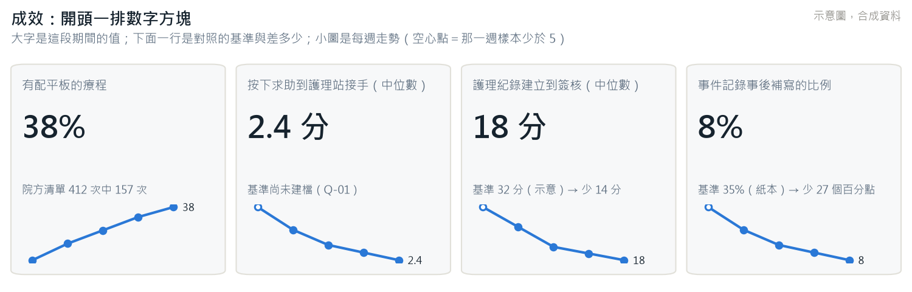
圖 2 接手的每日中位數：空心點是那一天少於 5 件；有基準才畫虛線。
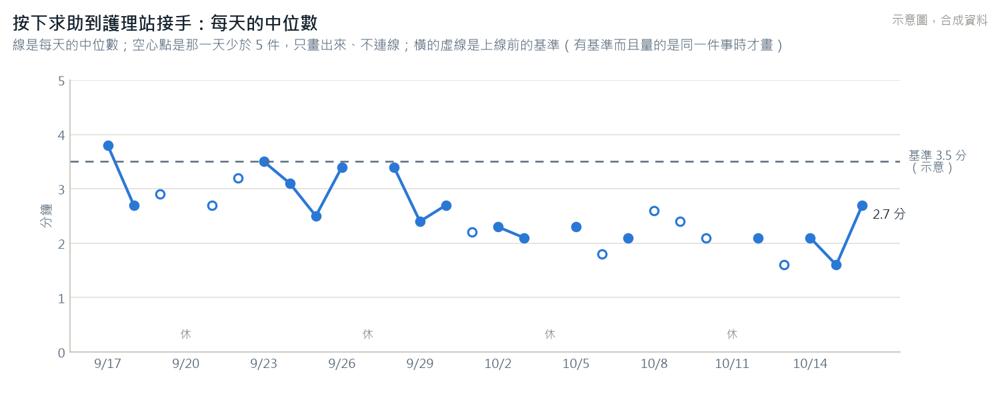
圖 3 求助類別：臨床組藍色、其他灰色；少於 5 件的不寫比例，免得 1 件被讀成「0.4%」這種假精確。
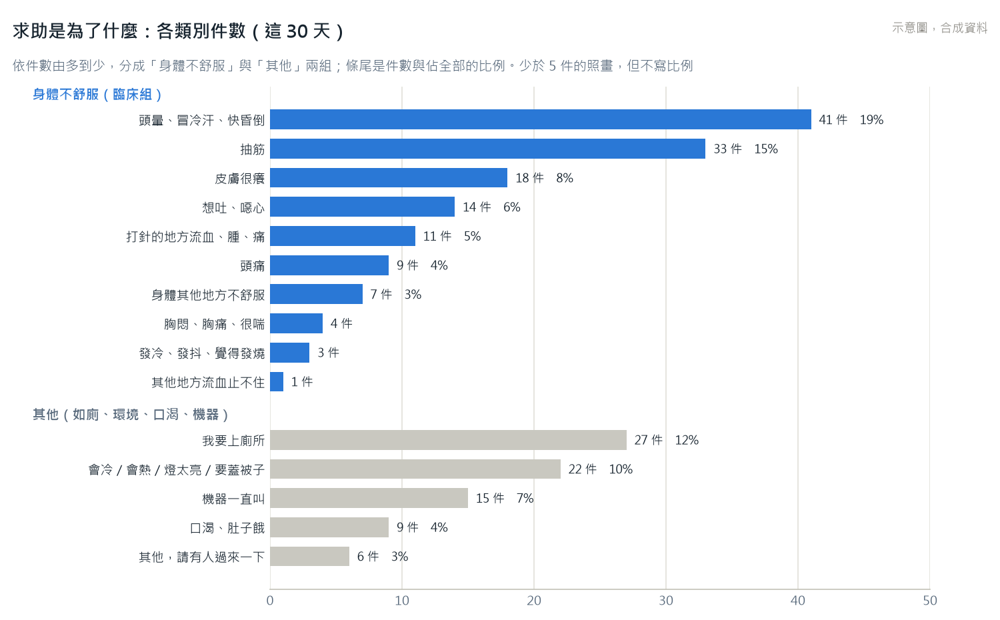
圖 4 處理結果：一週一條，條尾是件數。
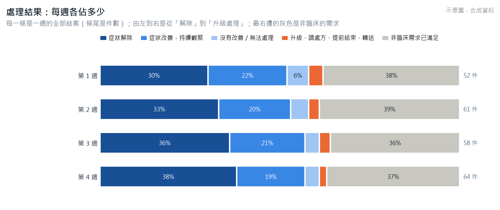
圖 5 任務完成率：分母是有配平板的療程。
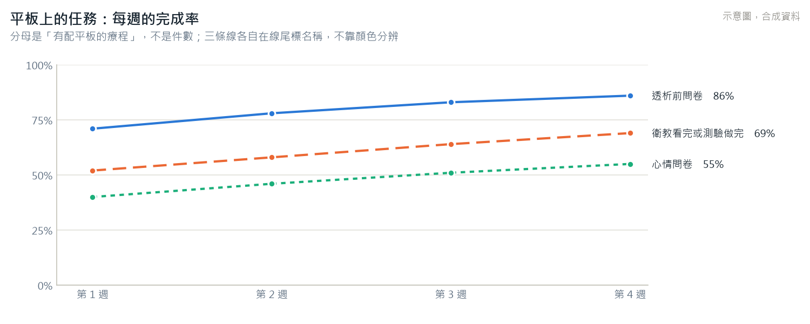
圖 6 遊戲使用：分母是有配平板、而且那款遊戲開著的療程。
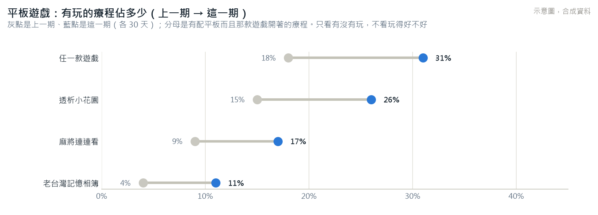
3.4 各班工作量分頁的圖¶
圖 7 星期 × 鐘點：班別的界線畫虛線；早、午、晚班是院方的療程班別，不是護理師班表。
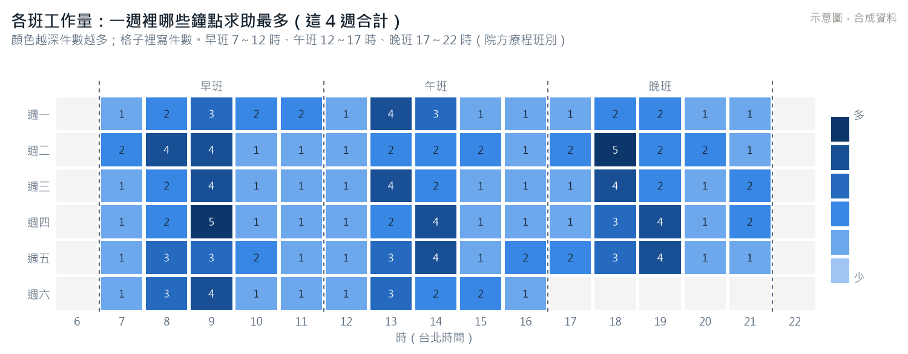
圖 8 接手時間的分布
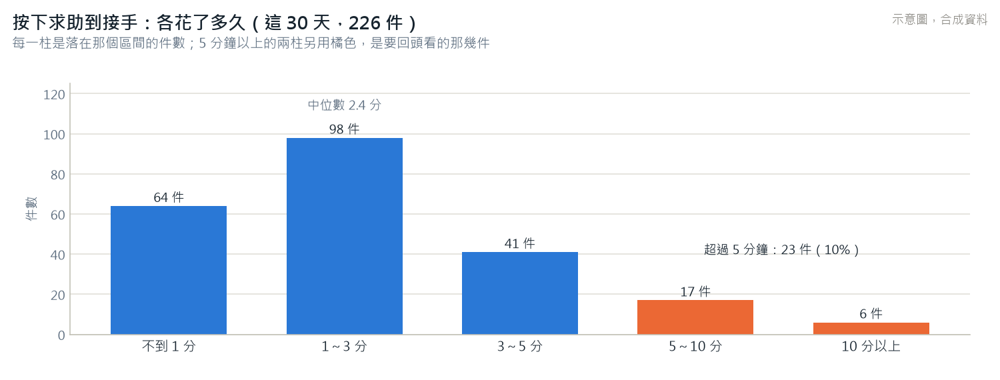
圖 9 每天各班的件數
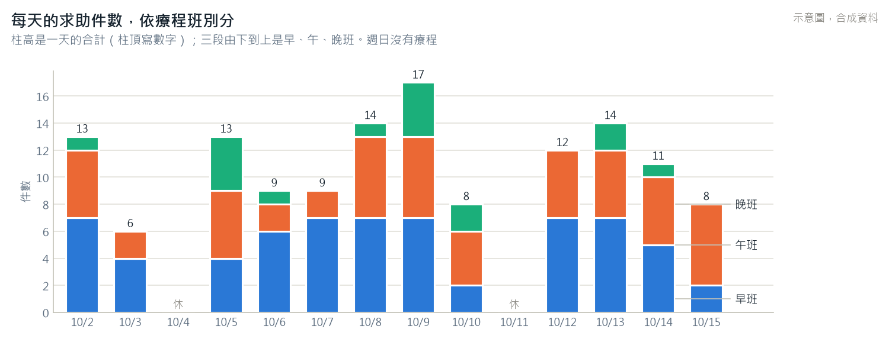
圖 10 三班比較：左右兩張各自一個軸。
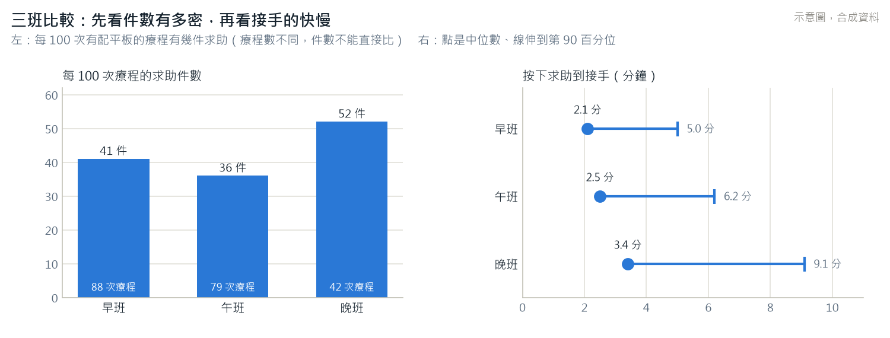
圖 11 同時在等的最大值
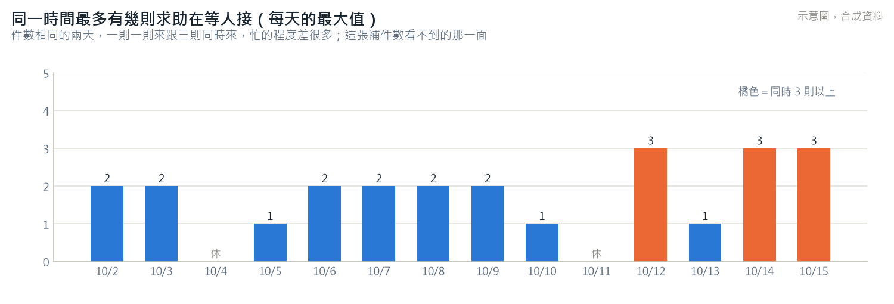
圖 12 文書與審閱
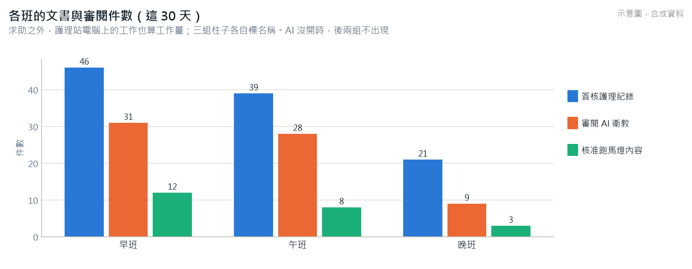
3.5 版面¶
成效分頁
┌────────────────────────────────────────────────────────────────────┐
│ 期間 [最近 30 天 ▾] │
│ [平板覆蓋率] [按下到接手] [紀錄建立到簽核] [事後補寫] [到床邊：開關關著] │ ← 數字方塊（圖 1）
│ [再求助] [追蹤逾期] [AI 採用] [內容退回] [院方資料抓取] [平板連線] │ ← 第二排，小一號
├──────────────────────────────────┬─────────────────────────────────┤
│ 接手的每日中位數（圖 2） │ 求助類別（圖 3） │
├──────────────────────────────────┼─────────────────────────────────┤
│ 處理結果（圖 4） │ 任務完成率（圖 5） │
├──────────────────────────────────┴─────────────────────────────────┤
│ 遊戲使用（圖 6，開關開著才有） ｜ 測驗依主題的答對率 │
│ 上線前量了、系統量不到的（文字，照舊） │
└────────────────────────────────────────────────────────────────────┘
1366×768 第一屏放得下數字方塊與圖 2、圖 3；其餘往下捲。每張圖右上角一顆「看表格」。
4. 獎勵制度：怎麼判斷是哪一位護理師做的¶
4.1 現在怎麼判斷¶
| 計分事件 | 算給誰 | 那個欄位實際記的是 |
|---|---|---|
| 求助結案且填了處理方式與結果 | resolved_by_id |
按下結案那一刻登入中的帳號 |
| 簽核護理紀錄 | signed_by_id |
按下簽核那一刻登入中的帳號 |
| 審閱 AI 衛教 | reviewed_by_id |
按下核可或退回那一刻登入中的帳號 |
| 完成求助的追蹤事項 | closed_by_id |
按下完成那一刻登入中的帳號 |
四個都是帳號。
4.2 依據是排班還是登入¶
沒有一個用到排班資料，全部是登入帳號。
- 登入帳號不能當成「誰做的」：護理站一兩台電腦，常常是護理長或第一個到的人登入、整班大家輪流用；去床邊處理的人跟按結案的人也不一定是同一個；緊急的時候沒有人會先登出再登入。照現在的計算方式，誰的帳號開著，整班的事就算給誰
- 排班連動：獎勵制度沒有用排班資料，所以不必跟著「班表」開關。新的判斷方式（4.3）也刻意不用排班資料：一來班表關著時根本沒有；二來調班常常沒登記，從班表推「這個時段是誰」會把事情默默算給排了班卻不在的人。 迭代 19 裡唯一用到排班資料的是「臨時調動候補」（FR-M03），它在「班表」那一頁，後端也以班表的版位擋下，已經跟著班表關，不必改。全部的對照在第 6 節
4.3 新的判斷：接手的當下選「我是誰」¶
開關開著時，迭代 25.2 的床邊前速覽上方那一顆「我接手」，換成一排名字：
┌ 速覽 ─────────────────────────────────────────────────────────────────────┐
│ B1 模擬戊 頭暈、冒冷汗、快昏倒・緊急・14:05（3 分鐘前） [×] │
│ 我接手：[ 王小美 ] [ 林佳蓉 ] [ 張雅婷 ] [ 陳怡君 ] [ 其他人… ] [ 先接手 ] │
├───────────────────────────────┬───────────────────────────────────────────┤
│ （以下與迭代 25 的速覽相同：最新一筆數值、兩張折線圖、近期求助、待追蹤） │
- 名字本身就是「我接手」：按下去同時確認通報、記下處理者，速覽關掉。跟迭代 25 一樣是一下
- 不預選，也不從登入帳號推。登入的是誰，跟按哪個名字無關
- 接手之後，簡易版的床格與專業版的卡片上寫「王小美 接手」：其他人一眼知道誰去了，選錯的話同事當場看得出來
- 專業版緊急通報頁卡片上的「我接手」也換成同一排名字。這是 FR-N14「專業版不動」的第五個例外（前四個見《緊急通報的處理流程與護理紀錄連動》2.4），只在開關開著時出現；關著時專業版與迭代 25 一模一樣
4.4 問題一：緊急時要多按一下¶
解法是不多按——把「選人」併進原本就要按的那一下：
- 名字即接手（4.3）：最常見的情形，額外的點選是 0
- 名單短而且不跳動：只列「最近 12 小時內，在任何一台電腦上接手過或被指名過的人」，最多 6 位，依姓名筆畫排。名單不靠排班，靠的是指名本身；位置不依「最近一次」重排，同一位護理師的按鈕一整班都在同一個地方
- 一班的第一次：名單裡還沒有自己時，按「其他人…」展開全部（多一下）；按過之後就進了名單，這一班不會再多按
- 永遠有「先接手」：急到不想找名字時，按它就接起來，處理者記成「未指名」。接手不會因為選人而慢一秒
- 之後再補：結案時（簡易版點處理方式之後的 8 秒改結果列、專業版的結案登記）與簽核求助處置紀錄時，都有一行「處理者：未指名 [選]」，回到護理站不急的時候補；沒補也照樣結案、照樣簽核
| 情形 | 迭代 25 | 開關開著 |
|---|---|---|
| 這一班已經接過的人再接 | 開速覽、按我接手：2 下 | 開速覽、按自己的名字：2 下 |
| 這一班第一次接 | 2 下 | 開速覽、其他人、自己的名字：3 下 |
| 急到不想找 | 2 下 | 開速覽、先接手：2 下（之後補選，或不補） |
4.5 問題二：未註冊的護理師沒有身分可選¶
- 名冊身分：護理長在「帳號審核」頁新增一筆「名冊身分」，只有姓名與工作 ID，沒有密碼、登不進去，但選得到。支援人力、還沒申請帳號的人都用這個
- 「我不在名單上」：先接手之後，在結案或簽核時按它，填姓名與工作 ID，成為「待確認的名冊身分」；護理長在帳號審核頁確認後生效。確認之前，那一筆仍算未指名。緊急的當下不必打字
- 註冊之後合併：日後以同一個工作 ID 申請帳號並核准，名冊身分直接升級成那個帳號，之前記下的每一筆跟著走
- 計分：名冊身分的事件照記，不計分——本人登不進來、看不到自己的明細、無法提出更正，FR-M10 與《資料庫使用規範》11.3 第 4 條的前提不成立。帳號核准之後，還沒結算的期間照常計分（含核准前已記下的事件）；已結算的不回頭重算
- 帳號還在審核中的人，比照名冊身分
4.6 選錯、沒選、冒名¶
| 狀況 | 怎麼發現、怎麼更正 |
|---|---|
| 按錯名字 | 床格與卡片上看得到名字，當場改；結案前結案登記上也能改 |
| 別人按了我的名字 | 自我檢視列出每一筆（時間、種類，不含病人），不是自己的按「這一筆不該算」，護理長處理 |
| 我做了但沒指名 | 自我檢視多一塊「這一期沒有指名的事件」（全單位的，只有時間與種類），認領就是送出「少算了一筆」的更正申請，護理長核准才算 |
| 事後查證 | 每一次指名都寫稽核：當時登入的帳號、指名誰、什麼時候、在哪一步（接手、結案、簽核、事後補選、更正） |
不加個人密碼（PIN）：多一步、會忘、最後會變成大家共用一組；改用「名字公開在床格上＋本人看得到每一筆＋可以更正」。這一條列在第 10 節第 1 題。
未指名的比例是觀察期最重要的資料品質指標：「計分期間」那一頁每一期都列（全單位的一個比例，不分人）。未指名太多，計分就不公平；要多少以下才進計分期，由護理部決定（Q-20），系統只負責列出來。
4.7 其他計分事件也要指名¶
簽核護理紀錄、審閱 AI 衛教、核准跑馬燈內容、完成追蹤事項——都在護理站電腦上做、不急。開關開著時，確認的那一步多一排同樣的名字（同一份名單、不預選、可以「不指名」）。
獎勵只算有指名的事件。 原本那四個帳號欄位照記（稽核用），不再拿來計分。
4.8 計分事件的修正¶
| 規則 | 現在 | 修正 | 理由 |
|---|---|---|---|
| RW-HELP-01 求助處理紀錄完整 | 結案時方式與結果都有填，歸結案的帳號 | 改成「求助處置紀錄完成」：處理者接手的臨床組求助，結案後那一份求助處置紀錄（迭代 25.3）有簽核，歸處理者 | 簡易版點一下就同時填好方式與結果，「完整」一定成立，原規則實際上在算誰接得多，會讓人搶著接；改了之後非臨床的求助（上廁所、會冷）不算，不會搶簡單的 |
| RW-NR-01 護理紀錄簽核 | 每一份 | 求助處置紀錄以外的每一份，歸簽核時指名的人 | 不跟 RW-HELP-01 重複算 |
| RW-EDU-01 衛教內容審閱 | 歸審閱的帳號 | 歸審閱時指名的人 | — |
| RW-FU-01 追蹤事項完成 | 歸完成的帳號 | 歸完成時指名的人 | — |
| 新增 RW-CAR-01 跑馬燈內容審閱 | 沒有 | 核准或退回一則 AI 起草的跑馬燈內容（含病友小撇步、你知道嗎），歸指名的人 | 與衛教審閱同一種工作（迭代 17 起 AI 起草、護理師核准） |
明確不算：回應速度、接手件數、回貼圖（迭代 20 定了不能有壓力）、收到的花、遊戲、判斷輔助提示的採用與否（那是臨床判斷）、病人的任何臨床結果。
預設規則仍然全部是草稿、每件 1 點，實際的定義與權重等護理部（Q-20）。
4.9 一個開關¶
新增開關「獎勵制度（含處理者身分）」，預設關閉。
| 關著（預設） | 開著 | |
|---|---|---|
| 速覽與專業版卡片 | 只有一顆「我接手」，與迭代 25 一模一樣 | 一排名字＋其他人＋先接手 |
| 結案、簽核、審閱、完成追蹤 | 照舊 | 多一排名字 |
| 「獎勵制度」頁 | 不存在：選單沒有、路由沒有、後端擋 | 在選單裡 |
| 處理者 | 不記 | 記 |
| 觀察期、計分期 | 開不了 | 開得了 |
- 取代原本的「獎勵計分」開關：原本「先結算觀察期才能開計分開關」，但觀察期要有處理者的資料，而處理者要開關開著才記——兩個開關會互相卡住。合併之後，「計分」改成計分期的建立條件：至少結算過一個觀察期、至少一條已公告的規則，才建得出計分期。舊開關那一列資料留著、不再讀
- 個人層級（L3）開關照舊獨立：它管的是「看別人的」，跟要不要記處理者是兩件事。看別人的個人層級仍然要兩個開關都開
- 開啟時要填核准依據（護理部同意試行的文號），連同切換寫稽核，照 FR-M11 的做法
- 觀察期最早只能從開關開啟的那一刻起算。原本觀察期可以任意回溯，開關開啟之前沒有處理者的資料，回溯只會算出一片「未指名」
- 關掉時：名字按鈕消失、不再記；已記下的保留；進行中的期間照樣可以結算
- 「獎勵制度」頁的版位改成跟著開關（迭代 22「病人詳細資訊」的做法）：開關開了就出現在選單，不必再到版位設定另外開
4.10 獎勵制度為什麼不畫圖¶
- 個人的數字一畫成圖就是比較，長條一排開就是排名；SRS 5.3 禁止公開的個人排名
- 自我檢視本來就是一張小表（每條規則幾件）加每一筆原始事件，畫成圖不會更清楚
- 唯一的全單位數字「未指名的比例」用數字方塊（圖 1 的樣式）放在「計分期間」那一頁
5. 對外揭露¶
5.1 現況¶
對外報表（FR-X01～X04）：選期間、選指標、分組只有「全單位」或「依透析班別」；樣本少於 5 的分組拿掉；禁止欄位在產生時就檢查；要另一個人核准才取得出 CSV；每一次產生、核准、取出都寫稽核。對外展示環境（FR-X05）一條指令建出全是虛構資料的另一套。逐項在子文件第 3 節。
5.2 要修正的：互減就算得回被拿掉的分組¶
例子：10 月依班別出一份報表，晚班的求助只有 4 件，照規則拿掉，早班 88、午班 79 照列；同一個月另外出一份全單位的報表，寫 171 件。看報表的人 171 − 88 − 79 = 4，晚班就算回來了。同一份報表的「樣本數」欄也是同一個道理；之後加了月份分組（5.3），各月加起來等於全期，又多一條路。
修正：
- 次要遮蔽：一份報表裡有一組因為樣本少拿掉時，件數類的指標（件數、份數、比例的分子）連同次小的那一組一起拿掉，畫面與檔案都寫「另有 1 組為了避免被推算而不呈現」
- 跨報表比對：同一段期間、同一個指標已經有核准過的報表，新的報表分組方式不同時，系統先比對兩份互減得不得出被拿掉的分組；得出就整份不產生，告訴產生的人是跟哪一份衝突、可以怎麼改（例如兩份都用同一種分組）
- 這兩條都在產生階段做，跟禁止欄位一樣，不是前端遮蔽
5.3 要補的¶
| 補什麼 | 做法 |
|---|---|
| 指標 | 2.2 新增的 L1 指標，逐項標可不可以對外（子文件 3.2）。可以：平板覆蓋率、任務完成率、遊戲使用率、求助處置紀錄、處理結果（合併成三類：解除或改善、沒有改善、升級處理）、求助類別（合併成兩類：身體不舒服、其他——十五類對外一定一堆不到 5）。不可以：AI 呼叫、SOP、院方資料抓取（內部維運，不是成效）；獎勵與處理者相關的一律不可以 |
| 月份分組 | 分組多一種「依月份」，看報表的人才看得到走勢；同樣受 5.2 的兩條管 |
| 附基準 | 產生時勾「附基準」才列，寫出量測期間、方法、份數、背書人、是不是估計值；量的不是同一件事的，照樣不算差多少（迭代 19 的規則） |
| 圖 | 報表頁面與取出的檔案都有圖（5.4） |
| 可列印版 | CSV 之外多一份可列印的版本（瀏覽器另存 PDF）：圖、每個指標的定義、哪些分組沒有呈現與原因、基準的來源。同樣要核准才取得出來，圖上每一個數字就是核准的那幾格，不另算 |
| 對外展示環境的合成資料 | 現在只產生求助、護理紀錄、基準幾張表；要補問卷、心情問卷、衛教、測驗、遊戲、求助處置紀錄與虛構的名冊身分，否則展示時新的圖都是空的 |
5.4 對外報表的圖¶
| 報表的分組 | 圖 | 理由 |
|---|---|---|
| 全單位 | 數字方塊（圖 1 的樣式），有勾附基準就寫基準與差多少 | 一組只有一個值 |
| 依透析班別 | 直條，每一個指標一張 | 三組比大小 |
| 依月份 | 直條，柱下寫樣本數；附基準時畫虛線 | 月份少、每個月樣本差很多，柱子比折線誠實：折線會把樣本 3 與樣本 133 的兩個月連成一條看起來一樣可信的線 |
共同規則：不呈現的分組整欄畫淡斜線、寫「不呈現（樣本少於 5）」，絕不畫成 0；每一柱下面寫樣本數；只有一個系列，不需要分色。
圖 13 依班別
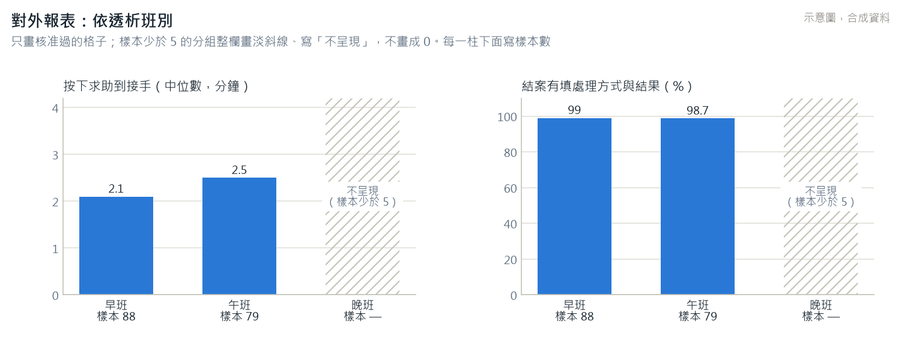
圖 14 依月份，附基準
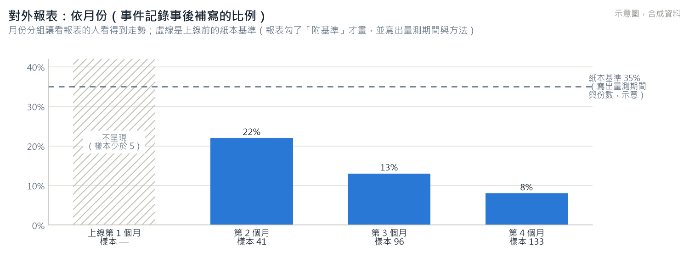
6. 排班連動的總整理¶
| 功能 | 用不用排班資料 | 「班表」關著時 |
|---|---|---|
| 獎勵的計分歸屬 | 不用（改成指名，4.3） | 不受影響 |
| 處理者的名字名單 | 不用（最近 12 小時接手或被指名過的人，4.4） | 不受影響 |
| 臨時調動候補（FR-M03） | 用 | 已經跟著關（在班表頁，後端以班表版位擋下），不改 |
| 勞動條件檢查（FR-M04） | 用（就是班表本身） | 跟著班表 |
| 每位當班護理師平均件數（1017 新增，2.2 G） | 用 | 不計算、不出現 |
| 工作量的「各班」 | 不用（院方的療程班別） | 不受影響 |
| 對外報表的「依透析班別」 | 不用（院方的療程班別） | 不受影響 |
7. 資料面的變更（只做加法）¶
| 變更 | 內容 |
|---|---|
| 新增「處理者指名」表 | 哪一種事（求助、護理紀錄簽核、衛教審閱、跑馬燈審閱、追蹤事項完成）、哪一筆、指名誰、什麼時候、當時登入的帳號、在哪一步（接手、結案、簽核、事後補選、更正）。一筆事只有一位處理者；改指名時更新並寫稽核 |
| 護理師多兩種狀態 | 名冊身分、待確認的名冊身分：沒有密碼、登不進去；記下是誰加的 |
| 開關 | 新增「獎勵制度（含處理者身分）」；原本的「獎勵計分」不再讀 |
| 指標的定義變更紀錄 | 新增一張表：指標、哪一天起、改了什麼（2.3 第 2 條） |
| 平板連線紀錄（1017 第 6 題） | 新增一張表：平板、斷線起、斷線訖、當時配著的療程（可空）；不記病人（2.2 F） |
| 新指標 | 定義照舊寫在 @hd/shared，每日快照沿用 metric_snapshots |
| 對外報表 | 分組多「依月份」；多「附基準」與「可列印版」；記下哪幾組是次要遮蔽拿掉的 |
| 不加 | 任何總分、排名欄位；遊戲的分數 |
8. 實作：排成迭代 26，切成三次子迭代¶
| 子迭代 | 做什麼 | 相依 |
|---|---|---|
| 26.1 | 儀表板的資料補齊與修正（2.2、2.3，含平板連線紀錄）、對外報表的互減修正與新分組（5.2、5.3 的資料面） | 迭代 25.3 的求助處置紀錄要先有，2.2 D 的那幾條才算得出來；沒有時那幾條寫「尚未上線」 |
| 26.2 | 14 張圖、看表格切換、簡報模式改版、對外報表的圖與可列印版、展示環境的合成資料 | 26.1 |
| 26.3 | 處理者身分與獎勵制度的修正（第 4 節） | 迭代 25.2 的速覽 |
為什麼不叫 19.1：小迭代收的是「看過畫面當場提出、歸在某個迭代底下」的修正；這一次要等迭代 25 的速覽與求助處置紀錄，排在 25 之後，叫 19.x 會讓「19.1 在 25 之後做」看起來像順序錯了。
9. 改了哪些文件¶
| 文件 | 1017 已改 | 迭代 26 做的時候改 |
|---|---|---|
| SRS | 新增 0.5 異動摘要（81 → 83 條）；FR-M05、M06、M08～M12 的 1017 補、新增 FR-M13（處理者指名）；5.3 禁止事項加「不得以登入的帳號作為計分的歸屬、不得以班表推定是誰做的」；FR-N10、N14（第五個例外）、N16 的 1017 補；FR-X01、X02 的 1017 補；新增 FR-S18（平板連線紀錄）；「補充說明（1017）」 | — |
| 實作規格書 | 1.2 需求總數、1.4、3.7（新增「獎勵制度」開關、取代「獎勵計分」）、3.10 的 1017 修正、4.0.5 與 4.18 加迭代 26、新增 4.26 | 各子迭代的狀態與實作結果 |
| 資料庫使用規範 | 8.2 處理者指名與平板連線紀錄的留存；11.2 計分歸屬與指名的級別；11.3 的 1017 補；12.2 互減也不得算回 | — |
| 介面設計基準與 hd-uiux 技能檔 | 3.5.4 名字列；3.7 圖、獎勵制度不畫圖、名字列；4.1 圖表色；驗收清單 | 截圖 |
| 尚待確認事項清冊 | Q-20 的 1017 更新與第 7 題（未指名比例的門檻） | — |
| 資料字典、測試手冊、API 路由表、進度報告、架構圖 | — | 照迭代收尾的規則逐項對 |
10. 1017 使用者的答覆¶
| # | 問題 | 開發端原本的建議 | 1017 答覆 |
|---|---|---|---|
| 1 | 指名要不要加個人密碼（PIN） | 不加。多一步、會忘、會共用；改用名字公開在床格上＋本人看得到每一筆＋可以更正（4.6） | 照建議 |
| 2 | 名冊身分的事件什麼時候開始計分 | 帳號核准之後、還沒結算的期間；已結算的不回頭重算（4.5） | 照建議 |
| 3 | RW-HELP-01 改成「求助處置紀錄完成」、RW-NR-01 排除求助處置紀錄、新增跑馬燈審閱 | 照 4.8；最後的定義與權重仍等護理部（Q-20） | 照建議 |
| 4 | 處理者的名字要不要顯示在簡易版床格上 | 顯示。其他人知道誰去了，選錯也當場看得出來 | 照建議 |
| 5 | 名字名單的時間窗與人數 | 12 小時、最多 6 位，依姓名筆畫排 | 照建議 |
| 6 | 平板斷線的歷史要不要加一張表來記，好放進儀表板 | 這次不加 | 要記。新增平板連線紀錄（SRS FR-S18），放進成效分頁第二排（2.2 F） |
| 7 | 排成迭代 26（不叫 19.1） | 照第 8 節 | 照建議 |
版本歷程¶
| 定版 | 日期 | 異動 |
|---|---|---|